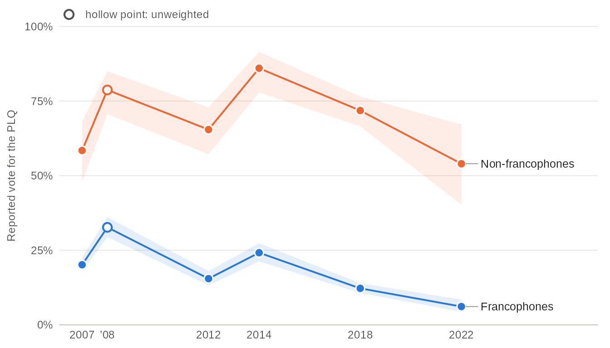
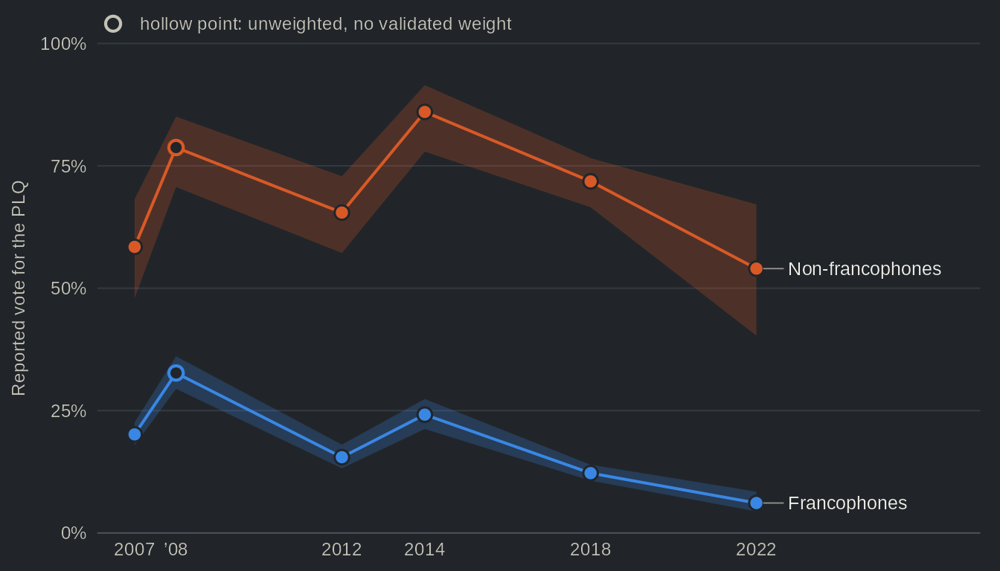
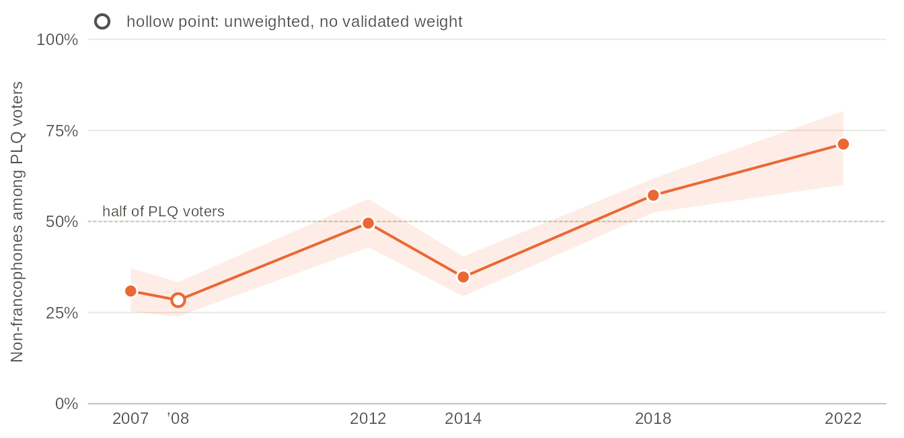
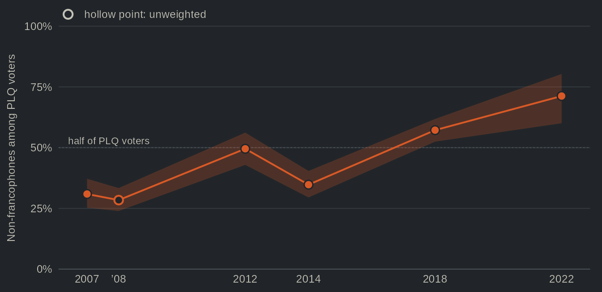
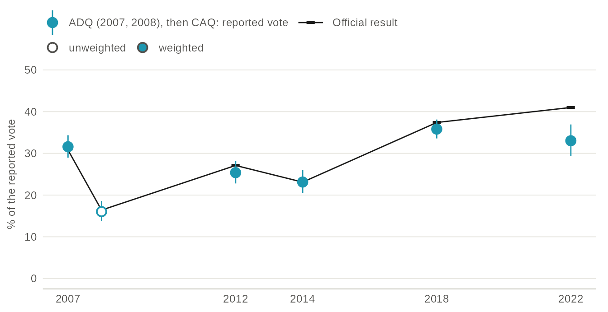
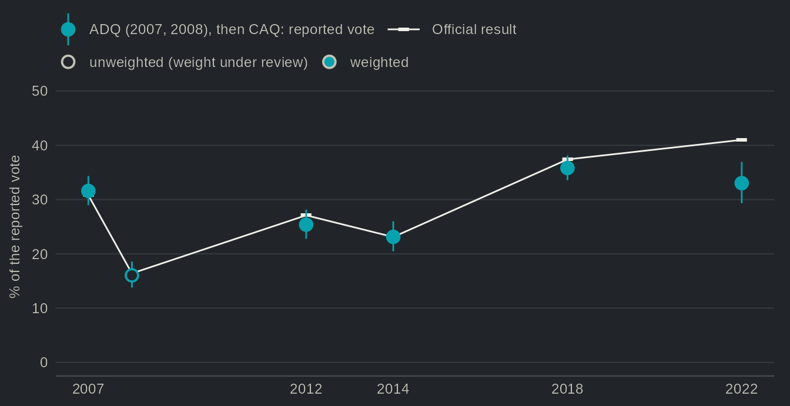

Recipes: the language divide in the Liberal vote, step by step
Source:vignettes/articles/recipes.Rmd
recipes.RmdSince the first provincial election studies, the Quebec vote has been read through language and the national question (Hamilton and Pinard 1976; Pinard and Hamilton 1978; Bélanger et al. 2018). The Parti libéral du Québec (PLQ) wins most of the anglophone and allophone vote, and its fortunes among francophones decide elections. A common reading holds that this language divide is the national question under another name: non-francophones vote Liberal because they are federalists. If that reading is right, the divide should have narrowed after 2012, as the Coalition avenir Québec (CAQ), a nationalist party that sets independence aside, courted francophone federalists and the sovereignty question was said to lose ground. That decline is itself less certain than it seems: in federal elections, the weight of support for independence in the vote held remarkably steady from 2006 to 2021 (Daoust and Gareau-Paquette 2024).
Overall, the Quebec Election Studies give this reading only limited support. The gap in the Liberal vote between non-francophones and francophones was about 38 percentage points in 2007 and 50 in 2012; it widened in 2014 and 2018, and it was still 48 points in 2022. Support for independence accounts for part of it, but only part: in the four studies from 2012 to 2022, once support for independence is held constant, the gap falls from 54 to 42 points. What did change is the Liberal electorate itself. Francophones left it (20% of them voted PLQ in 2007, 6% in 2022), so that non-francophones went from 31% of Liberal voters to 71% (58% had their share of the voters in each sample stayed at its 2007 level).
The recipes below build that answer step by step; each runs as is.
1. One vote-choice variable for every study
vote_choice pools three questions into one column: the
vote reported after the election, the intention with the undecided
pushed toward a party, and the plain intention.
vote_choice__type says which question each row answers.
studies <- c("qes1998", "qes2007", "qes2007_panel", "qes2008", "qes_crop_2007_2010",
"qes2012", "qes2012_panel", "qes2014", "qes2018", "qes2018_panel", "qes2022")
h <- qes_harmonize(studies = studies, targets = c("vote_choice", "lang_mother"),
layout = "long", quiet = TRUE)
table(h$study, h$vote_choice__type)
#>
#> recall intention_push intention
#> qes_crop_2007_2010 0 22848 1179
#> qes1998 1483 1483 0
#> qes2007 2175 0 0
#> qes2007_panel 2054 1997 53
#> qes2008 1151 0 0
#> qes2012 1505 0 0
#> qes2012_panel 844 844 0
#> qes2014 1517 0 0
#> qes2018 3072 0 0
#> qes2018_panel 842 1250 0
#> qes2022 1220 1521 0In this long format, a study with a wave before and a wave after the election has one row per wave, so the same respondent appears once with an intention and once with a reported vote. The CROP polls, fielded between elections, only have intentions.
2. Keep the reported vote only
Setting an intention in one study against a reported vote in another
would compare two different questions. For the language divide we keep
the reported vote, which every Quebec Election Study asked after the
election, and read each study in the default format, one row per
respondent. types keeps only some of the questions a pooled
variable brings together:
r <- qes_harmonize(studies = studies, targets = c("vote_choice", "lang_mother", "sov_support"),
types = list(vote_choice = "recall"), quiet = TRUE)
table(r$study, r$vote_choice__type, useNA = "ifany")
#>
#> recall intention_push intention <NA>
#> qes_crop_2007_2010 0 0 0 24027
#> qes1998 1483 0 0 0
#> qes2007 2175 0 0 0
#> qes2007_panel 2054 0 0 388
#> qes2008 1151 0 0 0
#> qes2012 1505 0 0 0
#> qes2012_panel 844 0 0 0
#> qes2014 1517 0 0 0
#> qes2018 3072 0 0 0
#> qes2018_panel 842 0 0 408
#> qes2022 1220 0 0 301vote_choice is now missing for the CROP polls, and for
respondents not reached after the vote. When a study asked several of
these questions and no type is set, the reported vote comes first, then
the pushed intention, then the plain one
(qes_spec("pooled") lists that order).
3. Where each value comes from
prov <- qes_provenance(r, level = "pooled")
prov[prov$pooled == "vote_choice", c("study", "type", "wave", "grade", "n_value")]
#> study type wave grade n_value
#> 1 qes1998 recall post comparable 1126
#> 7 qes2007 recall post comparable 1727
#> 13 qes2007_panel recall post approximate 1494
#> 19 qes2008 recall post comparable 898
#> 25 qes_crop_2007_2010 recall <NA> <NA> 0
#> 31 qes2012 recall post identical 1274
#> 37 qes2012_panel recall post approximate 633
#> 43 qes2014 recall post comparable 1283
#> 49 qes2018 recall post comparable 2016
#> 55 qes2018_panel recall post comparable 704
#> 61 qes2022 recall pes comparable 1101Each study’s question has a grade. It is identical when
the question, the options and the format are the same,
comparable when the differences (the order of the options,
whether “don’t know” is offered) should not move the shares, and
approximate when a format or a filter may move them. Only
the 2007 panel and the 2012 panel are approximate here. The charts below
therefore leave the panels aside and keep one Quebec Election Study per
election.
4. A weighted share with its confidence interval, in one study
d <- qes_design(r[r$study == "qes2018", ], weight = "weight_post")
d <- subset(d, !is.na(vote_choice))
caq18 <- svyciprop(~I(vote_choice == "CAQ"), d, method = "logit")
caq18
#> 2.5% 97.5%
#> I(vote_choice == "CAQ") 0.358 0.336 0.381The CAQ received 37.4% of the valid votes in 2018, and 35.8% of respondents to the 2018 study reported voting for it (95% confidence interval, 33.6 to 38.1). The official result thus falls inside that interval.
5. By group
plq18 <- svyby(~I(vote_choice == "PLQ"), ~lang_mother, subset(d, !is.na(lang_mother)),
svyciprop, method = "logit", vartype = "ci")
plq18
#> lang_mother I(vote_choice == "PLQ") ci_l ci_u
#> French French 0.1223020 0.1070069 0.1394418
#> English English 0.7418131 0.6814276 0.7942093
#> Other Other 0.6416905 0.5267904 0.7423376In 2018, 74% of anglophones and 64% of allophones voted Liberal, against 12% of francophones. The allophone estimate rests on 84 respondents, hence its wider interval. The next recipes group anglophones and allophones as non-francophones, since the allophone samples are too small to follow on their own from one election to the next.
6. Every study, one at a time
Studies differ in population, mode, wording and weighting, so each estimate is made within one study before any comparison. The 1998 study does not measure mother tongue, so the series starts in 2007. The weight of the 2008 study is still under review: its estimates are unweighted, and the charts draw them as hollow points.
qes <- c("qes2007", "qes2008", "qes2012", "qes2014", "qes2018", "qes2022")
r$francophone <- factor(ifelse(r$lang_mother == "French", "francophone", "other"))
# one design per study; a study without a post-election weight (2008) gets
# a unit weight, so its estimates are unweighted
is_weighted <- function(s, data = r) !all(is.na(data$weight_post[data$study == s]))
study_design <- function(s, data = r) {
x <- data[data$study == s, ]
if (!is_weighted(s, data)) x$weight_post <- 1
qes_design(x, weight = "weight_post")
}
plq <- do.call(rbind, lapply(qes, function(s) {
ds <- subset(study_design(s), !is.na(vote_choice) & !is.na(francophone))
est <- svyby(~I(vote_choice == "PLQ"), ~francophone, ds, svyciprop, method = "logit", vartype = "ci")
data.frame(study = s, year = as.integer(substr(ds$variables$year[1], 1, 4)),
weighted = is_weighted(s), group = est$francophone,
pct = 100 * est[[2]], lo = 100 * est$ci_l, hi = 100 * est$ci_u)
}))
print(plq, digits = 3, row.names = FALSE)
#> study year weighted group pct lo hi
#> qes2007 2007 TRUE francophone 20.14 17.91 22.59
#> qes2007 2007 TRUE other 58.44 47.99 68.18
#> qes2008 2008 FALSE francophone 32.68 29.46 36.08
#> qes2008 2008 FALSE other 78.74 70.68 85.05
#> qes2012 2012 TRUE francophone 15.49 13.23 18.05
#> qes2012 2012 TRUE other 65.46 57.20 72.87
#> qes2014 2014 TRUE francophone 24.18 21.25 27.37
#> qes2014 2014 TRUE other 86.01 77.91 91.47
#> qes2018 2018 TRUE francophone 12.23 10.70 13.94
#> qes2018 2018 TRUE other 71.83 66.55 76.58
#> qes2022 2022 TRUE francophone 6.13 4.42 8.44
#> qes2022 2022 TRUE other 54.01 40.32 67.11

Source: qesR, pooled vote_choice (reported vote) and lang_mother; non-francophones are respondents whose mother tongue is English or another language. Weighted with each study's post-election weight; hollow point (2008): unweighted.
Table view
| Election | Study | Francophones, % PLQ [95% CI] | Non-francophones, % PLQ [95% CI] | Gap [95% CI] | n, francophones | n, non-francophones | Weighting |
|---|---|---|---|---|---|---|---|
| 2007 | QES 2007 | 20.1 [17.9, 22.6] | 58.4 [48.0, 68.2] | +38.3 pts [27.9, 48.7] | 1525 | 163 | weighted |
| 2008 | QES 2008 | 32.7 [29.5, 36.1] | 78.7 [70.7, 85.1] | +46.1 pts [38.2, 53.9] | 771 | 127 | unweighted |
| 2012 | QES 2012 | 15.5 [13.2, 18.1] | 65.5 [57.2, 72.9] | +50.0 pts [41.8, 58.2] | 1094 | 180 | weighted |
| 2014 | QES 2014 | 24.2 [21.3, 27.4] | 86.0 [77.9, 91.5] | +61.8 pts [54.5, 69.1] | 981 | 201 | weighted |
| 2018 | QES 2018 | 12.2 [10.7, 13.9] | 71.8 [66.5, 76.6] | +59.6 pts [54.3, 64.9] | 1656 | 359 | weighted |
| 2022 | QES 2022 | 6.1 [4.4, 8.4] | 54.0 [40.3, 67.1] | +47.9 pts [34.1, 61.6] | 883 | 121 | weighted |
Two results emerge. First, the divide is large at every election, from 38 points in 2007 to 62 points in 2014, and it did not clearly narrow after 2012. Relative to 2012 (about 50 points), the gap widened in 2014 and 2018 and was back to about 48 points in 2022, an estimate whose interval (34 to 62) includes the 2012 gap. Second, the two groups did not move in step. Among francophones, the Liberal vote fell from 20% in 2007 to 6% in 2022. Among non-francophones it moved between 54% and 86% with no clear trend, and in 2022 it was about 4 points below its 2007 level. The narrower gap of 2022 comes from the non-francophone side: from 2018 to 2022, the Liberal vote fell 18 points among non-francophones and 6 among francophones. The non-francophone estimate of 2022, however, rests on only 121 respondents, the smallest sample of the series (the largest has 359), and its interval is wide. This is also why the page does not split non-francophones into anglophones and allophones.
7. Who votes Liberal
The same data can be read from the other side: not the share of each group that votes Liberal, but the share of Liberal voters who belong to each group. Read this way, the change is plain.
comp <- do.call(rbind, lapply(qes, function(s) {
ds <- subset(study_design(s), vote_choice %in% "PLQ" & !is.na(francophone))
est <- svyciprop(~I(francophone == "other"), ds, method = "logit")
data.frame(study = s, year = plq$year[plq$study == s][1], weighted = is_weighted(s),
pct = 100 * as.numeric(est), lo = 100 * attr(est, "ci")[[1]], hi = 100 * attr(est, "ci")[[2]])
}))
print(comp, digits = 3, row.names = FALSE)
#> study year weighted pct lo hi
#> qes2007 2007 TRUE 30.9 25.3 37.2
#> qes2008 2008 FALSE 28.4 23.9 33.4
#> qes2012 2012 TRUE 49.5 42.9 56.2
#> qes2014 2014 TRUE 34.8 29.5 40.4
#> qes2018 2018 TRUE 57.2 52.5 61.8
#> qes2022 2022 TRUE 71.2 60.0 80.3

Source: qesR, pooled vote_choice (reported vote) and lang_mother. Weighted with each study's post-election weight; hollow point (2008): unweighted.
Table view
| Election | Study | Non-francophones among PLQ voters, % [95% CI] | n, PLQ voters | Non-francophones among all voters, % | Non-francophones among PLQ voters, at their 2007 share of all voters, % | Weighting |
|---|---|---|---|---|---|---|
| 2007 | QES 2007 | 30.9 [25.3, 37.2] | 424 | 13.4 | 30.9 | weighted |
| 2008 | QES 2008 | 28.4 [23.9, 33.4] | 352 | 14.1 | 27.1 | unweighted |
| 2012 | QES 2012 | 49.5 [42.9, 56.2] | 278 | 18.8 | 39.5 | weighted |
| 2014 | QES 2014 | 34.8 [29.5, 40.4] | 417 | 13.0 | 35.4 | weighted |
| 2018 | QES 2018 | 57.2 [52.5, 61.8] | 490 | 18.5 | 47.5 | weighted |
| 2022 | QES 2022 | 71.2 [60.0, 80.3] | 114 | 21.9 | 57.6 | weighted |
Non-francophones made up 31% of PLQ voters in 2007 and 71% in 2022. The path is not smooth, and each point rests on a few hundred Liberal voters at most. The share also depends on something other than the Liberal vote of each group: the weighted share of non-francophones among the voters of each study, which swings more than any change in the population would. That share is about 13% in 2007 and 2014, and 19 to 22% in 2012, 2018 and 2022; the dip of 2014 lines up with that year’s low share. Held at its 2007 level, the share of non-francophones among Liberal voters would still reach 58% in 2022. The rise holds, then, but its size depends on the composition of each sample. In other words, the PLQ went from a party whose voters were mostly francophone to one whose voters mostly are not. This is not because non-francophones rallied to it: francophones left.
8. Sovereignty: one variable, several wordings
sov_support pools the referendum questions. The wording
changed over time, and the pooled column records it in
sov_support__type: shares should be compared within one
wording only.
table(r$study, r$sov_support__type)
#>
#> independence sovereign_country partnership_1995_push
#> qes_crop_2007_2010 0 0 0
#> qes1998 0 0 1483
#> qes2007 0 0 2175
#> qes2007_panel 0 0 2050
#> qes2008 0 0 1151
#> qes2012 1505 0 0
#> qes2012_panel 0 844 0
#> qes2014 1517 0 0
#> qes2018 3072 0 0
#> qes2018_panel 0 0 0
#> qes2022 1521 0 0
#>
#> partnership_1995 favour
#> qes_crop_2007_2010 0 0
#> qes1998 0 0
#> qes2007 0 0
#> qes2007_panel 0 0
#> qes2008 0 0
#> qes2012 0 0
#> qes2012_panel 0 0
#> qes2014 0 0
#> qes2018 0 0
#> qes2018_panel 0 842
#> qes2022 0 0The four Quebec Election Studies from 2012 to 2022 asked the same question on independence, which the next recipe uses. The earlier studies asked the partnership question of the 1995 referendum, and the 2012 and 2018 panels used wordings of their own.
9. Pooling studies in one model
Pooling studies only makes sense in a model that keeps them apart,
with study fixed effects, so that each association is estimated within
studies. pool = "equal" gives every study the same total
weight among the rows it receives, so we select the rows of the model
first; by default a study counts in proportion to its number of
respondents. We use a linear probability model, so a coefficient times
100 reads in percentage points. The first model has only the study fixed
effects; the second adds support for independence; the third lets the
language gap differ from one study to the next.
four <- c("qes2012", "qes2014", "qes2018", "qes2022")
x <- r[r$study %in% four & !is.na(r$vote_choice) & !is.na(r$francophone) & !is.na(r$sov_support), ]
dp <- qes_design(x, weight = "weight_post", pool = "equal")
m1 <- svyglm(I(vote_choice == "PLQ") ~ francophone + study, dp)
m2 <- svyglm(I(vote_choice == "PLQ") ~ francophone + I(sov_support == "Yes") + study, dp)
m3 <- svyglm(I(vote_choice == "PLQ") ~ francophone * study + I(sov_support == "Yes"), dp)
100 * rbind(study_effects = coef(m1)[2], plus_independence = coef(m2)[2])
#> francophoneother
#> study_effects 54.07327
#> plus_independence 42.37054
regTermTest(m3, ~ francophone:study)
#> Wald test for francophone:study
#> in svyglm(formula = I(vote_choice == "PLQ") ~ francophone * study +
#> I(sov_support == "Yes"), design = dp)
#> F = 2.150366 on 3 and 4851 df: p= 0.091757Across the four elections, and with study fixed effects only, non-francophones are about 54 points more likely than francophones to vote Liberal (95% confidence interval, 49 to 59). Among voters who give the same answer to the independence question, the gap is still 42 points. Support for independence thus accounts for about 12 of the 54 points of the language divide in the Liberal vote. In other words, most of the divide is not the national question under another name, at least as one question on independence measures it. Finally, the evidence that the gap changed between 2012 and 2022 is weak (a test of equal gaps across the four studies gives p = 0.09).
10. The ADQ and the CAQ as one series, against the vote count
The harmonized columns keep the Action démocratique du Québec (ADQ)
and the CAQ apart. qes_party_lineage() adds a column that
joins them, for time series; its rows fielded before the merger of 2012
are graded approximate.
l <- qes_party_lineage(r, cols = "vote_choice")
table(l$study, l$vote_choice_lineage)[, c("PLQ", "PQ", "ADQ/CAQ", "QS")]
#>
#> PLQ PQ ADQ/CAQ QS
#> qes_crop_2007_2010 0 0 0 0
#> qes1998 384 517 204 0
#> qes2007 439 521 583 75
#> qes2007_panel 428 460 480 57
#> qes2008 352 336 144 38
#> qes2012 278 509 324 96
#> qes2012_panel 167 243 151 45
#> qes2014 489 344 277 131
#> qes2018 490 392 700 342
#> qes2018_panel 200 108 263 87
#> qes2022 146 206 364 209Weighted within each study and set against the official result, that
column gives a first check on the reported vote. p is a
plain ggplot2 chart to adapt (print it with p).
lineage <- do.call(rbind, lapply(qes, function(s) {
ds <- subset(study_design(s, l), !is.na(vote_choice_lineage))
est <- svyciprop(~I(vote_choice_lineage == "ADQ/CAQ"), ds, method = "logit")
ci <- attr(est, "ci")
data.frame(study = s, year = plq$year[plq$study == s][1], weighted = is_weighted(s, l),
pct = 100 * as.numeric(est), lo = 100 * ci[[1]], hi = 100 * ci[[2]])
}))
# the official share of valid votes of the ADQ (2007, 2008) and of the CAQ
# (2012 on), from Élections Québec
official <- data.frame(year = c(2007, 2008, 2012, 2014, 2018, 2022),
pct = c(30.8, 16.4, 27.1, 23.1, 37.4, 41.0))
fr <- identical(params$lang, "fr")
lab_series <- if (fr) c(lineage = "ADQ (2007, 2008), puis CAQ : vote déclaré", official = "Résultat officiel") else
c(lineage = "ADQ (2007, 2008), then CAQ: reported vote", official = "Official result")
lab_weight <- if (fr) c(`TRUE` = "pondéré", `FALSE` = "non pondéré") else
c(`TRUE` = "weighted", `FALSE` = "unweighted")
p <- ggplot(lineage, aes(year, pct)) +
geom_line(data = official, aes(colour = "official")) +
geom_point(data = official, aes(colour = "official"), shape = 45, size = 9) +
geom_linerange(aes(ymin = lo, ymax = hi, colour = "lineage")) +
geom_point(aes(colour = "lineage", fill = weighted), shape = 21, size = 3, stroke = 1) +
scale_colour_manual(values = c(lineage = "#1d97b0", official = "grey20"), labels = lab_series) +
scale_fill_manual(values = c(`TRUE` = "#1d97b0", `FALSE` = "white"), labels = lab_weight) +
scale_x_continuous(breaks = c(2007, 2012, 2014, 2018, 2022)) +
scale_y_continuous(limits = c(0, 50)) +
labs(x = NULL, y = if (fr) "% du vote déclaré" else "% of the reported vote", colour = NULL, fill = NULL)
print(lineage, digits = 3, row.names = FALSE)
#> study year weighted pct lo hi
#> qes2007 2007 TRUE 31.6 29.0 34.3
#> qes2008 2008 FALSE 16.0 13.8 18.6
#> qes2012 2012 TRUE 25.4 22.8 28.2
#> qes2014 2014 TRUE 23.1 20.5 26.0
#> qes2018 2018 TRUE 35.8 33.6 38.1
#> qes2022 2022 TRUE 33.0 29.3 36.9

Source: qesR, pooled vote_choice (reported vote) with qes_party_lineage(); official results of Élections Québec. The ADQ merged into the CAQ in 2012, and the lineage column joins them for a time series. Weighted with each study's post-election weight; hollow point (2008): unweighted.
Table view
| Election | Study | Party | Reported vote, % [95% CI] | Official, % of valid votes | Difference | Weighting |
|---|---|---|---|---|---|---|
| 2007 | QES 2007 | ADQ | 31.6 [29.0, 34.3] | 30.8 | +0.8 pts | weighted |
| 2008 | QES 2008 | ADQ | 16.0 [13.8, 18.6] | 16.4 | −0.4 pts | unweighted |
| 2012 | QES 2012 | CAQ | 25.4 [22.8, 28.2] | 27.1 | −1.7 pts | weighted |
| 2014 | QES 2014 | CAQ | 23.1 [20.5, 26.0] | 23.1 | 0.0 pts | weighted |
| 2018 | QES 2018 | CAQ | 35.8 [33.6, 38.1] | 37.4 | −1.6 pts | weighted |
| 2022 | QES 2022 | CAQ | 33.0 [29.3, 36.9] | 41.0 | −8.0 pts | weighted |
Up to 2018, the reported vote stays within 2 points of the official result. In 2022, contrary to the usual overreporting of the winner after an election, it falls 8 points short, while the same study puts the PLQ at 17% against 14% officially. The levels of 2022 call for some caution. The argument above rests on differences between groups within each study, which are less exposed than levels to an error of this kind, though not immune to it.
What the recipes show
In sum, the Quebec Election Studies give only limited support to the idea that the language divide is the national question under another name. Support for independence explains part of the gap in the Liberal vote, and the gap did not clearly narrow after 2012. What changed is who votes Liberal: as francophones left, the PLQ became a party whose voters are mostly non-francophones. Our analysis is not without limits. First, mother tongue is a coarse measure. Recent work also treats language as an attitude, the worry that French is under threat, and that worry varies among francophones themselves (Daoust and Gareau-Paquette 2026). Second, the estimates are associations within cross-sections, not causes, and the non-francophone samples are small, and their share of each sample varies from one study to the next. Of course, the divide does not hold for every party: support for the Parti conservateur du Québec (PCQ) cut across it in 2022 (Bélanger et al. 2025). The next question is where the francophone Liberals went, which the pages on realignment and on changing minds during the campaign take up.
Further reading
Bélanger, Éric, Philippe Mongrain, Thomas Gareau-Paquette, and Valérie-Anne Mahéo. 2025. “A Party that Went Viral? The Drivers of Support for the Parti Conservateur du Québec in the 2022 Election.” Canadian Journal of Political Science 58 (2): 277–96. https://doi.org/10.1017/S0008423924000829
Bélanger, Éric, Richard Nadeau, Ailsa Henderson, and Eve Hepburn. 2018. The National Question and Electoral Politics in Quebec and Scotland. Montreal and Kingston: McGill-Queen’s University Press. https://doi.org/10.1515/9780773554139
Daoust, Jean-François, and Thomas Gareau-Paquette. 2024. “Is Quebec Independence Still Key in Making Sense of Canadian Elections? A Longitudinal Analysis (2000–2021).” Regional & Federal Studies 34 (5): 781–806. https://doi.org/10.1080/13597566.2023.2233422
Daoust, Jean-François, and Thomas Gareau-Paquette. 2026. « De plus en plus inquiets : qui sont les Québécois qui considèrent le français comme menacé et quelles en sont les conséquences électorales? » Canadian Journal of Political Science 59 (1): 61–80. https://doi.org/10.1017/S0008423925100942
Hamilton, Richard, and Maurice Pinard. 1976. “The Bases of Parti Québécois Support in Recent Quebec Elections.” Canadian Journal of Political Science 9 (1): 3–26. https://doi.org/10.1017/S0008423900043158
Pinard, Maurice, and Richard Hamilton. 1978. “The Parti Québécois Comes to Power: An Analysis of the 1976 Quebec Election.” Canadian Journal of Political Science 11 (4): 739–76. https://doi.org/10.1017/S000842390004659X